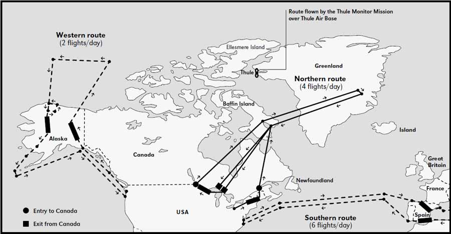
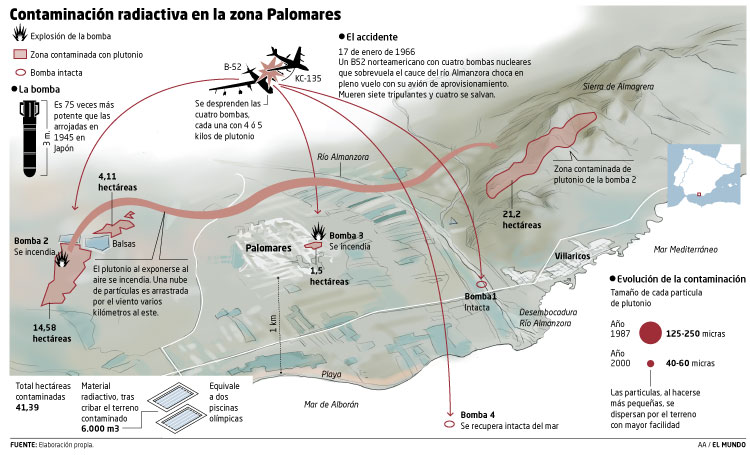

La Guerra Fría fue un enfrentamiento político, económico, social, ideológico, militar e informativo iniciado tras finalizar la Segunda Guerra Mundial entre el bloque Occidental (occidental-capitalista) liderado por los Estados Unidos, y el bloque del Este (oriental-comunista) liderado por la Unión Soviética. La primera persona en usar el término de Guerra Fría fue, a finales de la Segunda Guerra Mundial, el escritor inglés George Orwell. Orwell usó «guerra fría» como un término general en su ensayo You and the Atomic Bomb, publicado el 19 de octubre de 1945 en el periódico británico Tribune. En un mundo amenazado por la guerra nuclear, Orwell se refirió a las predicciones de James Burnham de un mundo polarizado y escribió:
Dado que tras la Segunda Guerra Mundial el poder de destrucción del armamento nuclear había quedado más que patente y que el alcance efectivo de los misiles soviético cargados con bombas nucleares si permitían alcanzar suelo norteamericano y destruir ciudades importantes de la costa oeste estadounidense, Estados Unidos, incapaz de realizar actos del mismo grado, es decir, incapaz de alcanzar con armamento nuclear Moscú, decidió idear un sistema, la denominada Operación Chrome Dome (doctrina de disuasión nuclear del SAC-Strategic Air Command.), para alcanzar objetivos mediante el uso de bombarderos B-52 que permanecían continuamente en vuelo y que hacía recorridos entre Estados Unidos y las fronteras de la URSS.
Este sistema permitía que en caso de un ataque nuclear soviético inesperado, EEUU tendría capacidad para devolver el ataque con armamento nuclear sobre ciudades-objetivo del interior de la Unión Soviética. Para mantener en vuelo los bombarderos B-52, el dispositivo requería del uso de aviones cisterna, destinados en bases militares europeas, que se encargarían del repostaje de los aviones en pleno vuelo de manera que estos bombarderos resultaran menos vulnerables a ataques de la fuerza aérea soviética. En la siguiente imagen puede verse el esquema de vuelo de la llamada Operación Chrome Dome.

De todas las misiones que se ejecutaban en la Operación Chrome Dome la que provocó el accidente de Palomares fue una de las que seguían la ruta sur que realizaban el aprovisionamiento frente a las costas almerienses gracias a un avión con base en Morón de la Frontera, que era el encargado de prestar servicio de repostaje al B-52 en su viaje de regreso a EEUU (en el trayecto en el que el B-52 iba de EEUU hasta la frontera turco-soviética, de la misión de repostaje se encargaba un avión cisterna con base en Zaragoza).
